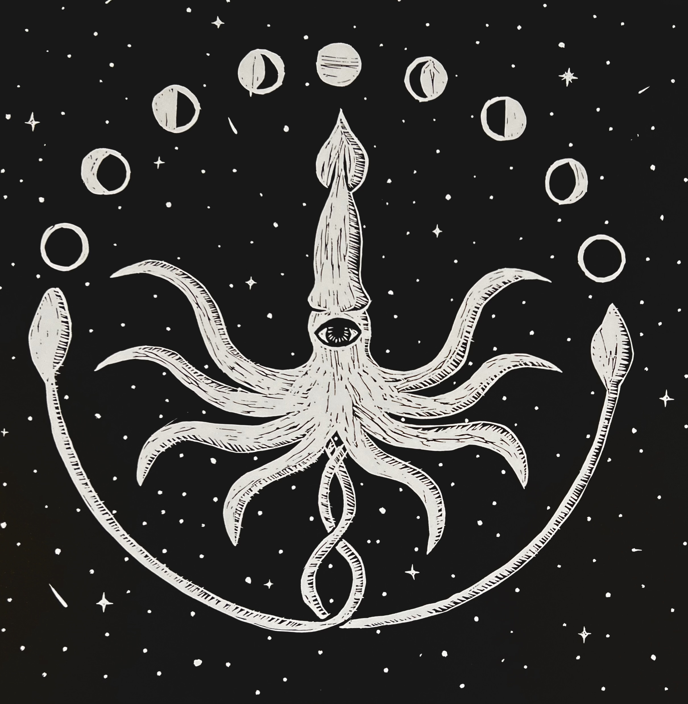

Make ideas tangible.
Game-based learning, educational simulations, and interactive worlds that invite people to explore and understand.

COSMIC SQUIDSTUDIORemote-first immersive experience studio
Immersive experiences for learning, training, and exploration. From the first idea to the final interaction, Cosmic Squid Studio brings the whole experience together.
Explore the workGame-based learning, educational simulations, and interactive worlds that invite people to explore and understand.
VR/AR/XR experiences designed around real tasks, clear feedback, and meaningful interaction.
Immersive stories and worlds that connect people with new perspectives, places, and possibilities.
End-to-end experience design · Unity development · Interaction design · Prototyping · Integration and testing

Animation, interaction, and experience integration in a class internship with Blackfeet Eco Knowledge.
View case studyScene management and overall flow for a group VR animation explaining vaccines, with animation for two of four scenes.
View case study
Unity scene leadership for a shared AR artwork exploring surveillance, from greybox to public launch.
View case study
Hand-drawn cards. Playable divination.
View case study
A walkable world of desire and reflection.
View case study
Scene-building for Peter Burr’s digital installation.
View case study
An imagined ecosystem, built by hand.
View case studyAbout Cosmic Squid
Cosmic Squid Studio is Syd Hoeper’s remote-first studio for immersive learning, training, and exploration.
I bring interaction design, Unity production, and worldbuilding together to shape how an experience feels, flows, and works. My portfolio includes contract collaborations, academic client projects, and independent creative work, with my role credited in each case study.
Collaborate
Have something to teach, a skill to practice, or a world to explore? Let’s talk about your audience and what you want them to experience.
sydhoeper@gmail.com